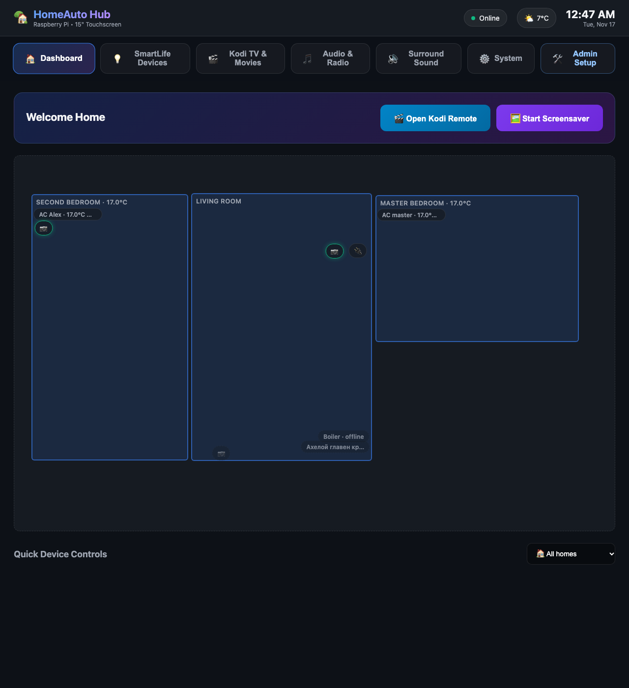
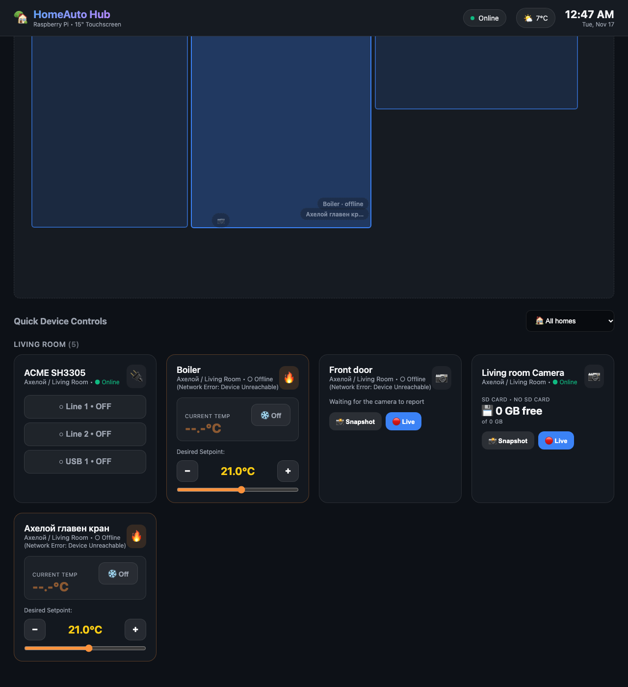
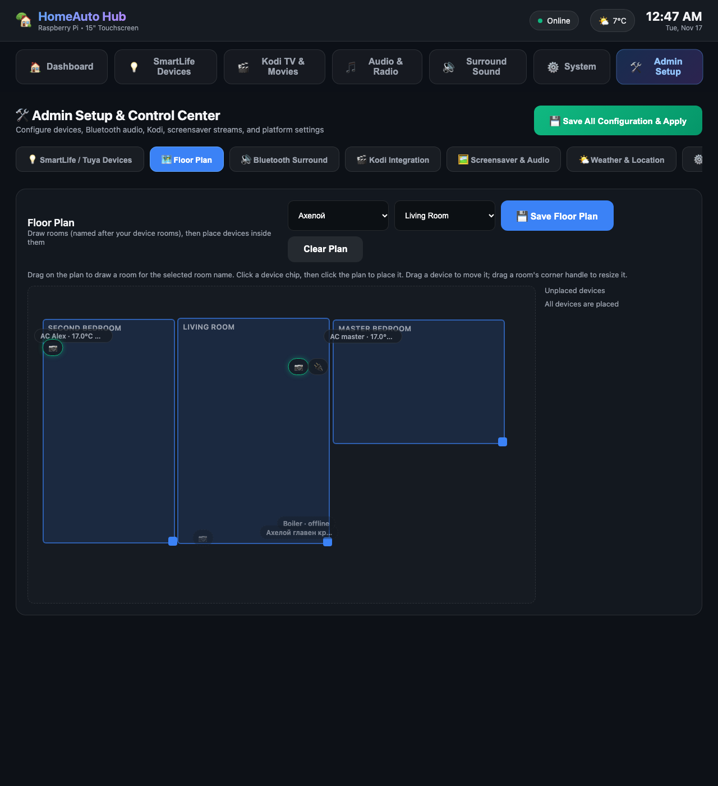

🏡 HomeAuto Platform
A complete, modern, touchscreen-optimized Home Automation Hub built for Raspberry Pi OS (Raspbian) with a 15" Touchscreen and Bluetooth Surround Sound.
🌟 Key Features
-
💡 SmartLife & Tuya Device Connectivity
- Ultra-fast Local Socket Control via
tinytuya(no cloud latency, works offline). - Cloud API Fallback via Tuya Open API for discovery and remote sync.
- Interactive dashboard widgets: toggles for switches, sockets, smart plugs, and brightness sliders for dimmable lights/LEDs.
- Ultra-fast Local Socket Control via
-
📱 15" Touchscreen Optimized Interface
- Sleek dark OLED/glassmorphism UI with large touch targets.
- Responsive layout: adapts from the 15" kiosk down to tablets and phones.
- Floor plan on the dashboard: tap it (or a room) to open it full screen; labels and device chips scale with the plan. Close with the ✕ button or
Esc. - Works in full-screen Chromium Kiosk Mode on the 15" touchscreen display.
- Real-time reactive state updates over WebSockets (instant sync between touchscreen and phone/laptop browsers).
-
🖼️ Ambient Screensaver with Glanceable Cards & YouTube Audio
- Auto-activates after configurable idle period (e.g. 2 minutes).
- Photo Slideshow: Cycles through local photos (
frontend/assets/photos) or curated Unsplash HD nature collections with smooth cross-fading. - Glanceable Cards: Giant OLED clock, live weather forecast, active SmartLife devices count, and Raspberry Pi CPU temperature.
- Background Audio: Integrated YouTube audio streamer (Lofi, Jazz, Ambient nature sounds or custom YouTube URL) with volume controls.
- Instant Wake: Tap anywhere on the 15" touchscreen to wake up.
-
🛠️ Admin Setup & Control Center Web Panel
- Device Management: Add, edit, test local connection, and delete SmartLife / Tuya devices, smart panels, and switches in real-time.
- Bluetooth Surround Audio Setup: Configure target MAC, auto-reconnect supervisor, default volume.
- Kodi Settings & Connectivity Tester: Configure host/port, test connection with real-time ping.
- Screensaver & YouTube Audio Stream Manager: Add custom YouTube background streams, set idle timeout, photo folder, and glanceable widget toggles.
- Weather & Geolocation: Auto-detect your latitude & longitude with 1-click.
- Live Hot-Reload: Save changes directly to
config.yamlwith automatic hot-reloading of all backend workers without restarting the service.
-
🎬 Kodi Integration for TV & Movies
- One-touch launcher to start Kodi on your display.
- Live "Now Playing" playback banner and media controls.
- Full touch D-Pad remote control (Up, Down, Left, Right, OK, Back, Home, Menu).
-
🔊 Bluetooth Surround Sound Audio Routing
- Auto-reconnect supervisor for your Bluetooth soundbar or surround speaker setup.
- Real-time volume slider and master sink control.
- Device scanning and pairing interface.
-
📲 AirPlay Screen Mirroring
- 📲 Screen Mirroring button on the dashboard (Pi's own screen only) turns the Pi into an AirPlay receiver for iPhone / iPad / Mac. See Screen Mirroring.
-
⚙️ Hardware Telemetry
- Live monitoring of Raspberry Pi CPU usage, CPU Temperature (
vcgencmd), RAM utilization, and IP address.
- Live monitoring of Raspberry Pi CPU usage, CPU Temperature (
-
⚡ Energy Monitoring
- Plugs/sockets with energy monitoring report live watts, volts, amps and total kWh (shown on their card, the dashboard "Power now" tile and per room on the floor plan).
- The server keeps a history (
data/energy.db) and the Energy view charts usage per day/week/month/year with a per-device breakdown. - Set your price per kWh under Admin → Energy to see the cost. Plugs without a meter report nothing.
📸 Screenshots
Dashboard floor plan
Rooms are drawn on the plan and named after the device rooms. Lamps that are on glow, and battery-powered devices change colour as their battery drains.

Room device cards
Tap a room on the plan to list its devices below it. Tap the room again, or an empty area of the plan, to hide them.

Floor plan editor
In Admin Setup, choose a home and a room name, then drag on the plan to draw the room. Place devices by clicking a chip and then the plan.

🛠️ Hardware Requirements
| Hardware Component | Details & Recommendation |
|---|---|
| Raspberry Pi | Raspberry Pi 4 (4GB/8GB) or Raspberry Pi 5 running Raspberry Pi OS (64-bit) |
| 15" Touchscreen | HDMI Video + USB Touchscreen (Capacitive Touch recommended) |
| Bluetooth Audio | Any Bluetooth soundbar, surround sound system, or wireless speaker |
| Power Supply | Official 15W/27W USB-C Raspberry Pi Power Supply |
Which Raspberry Pi models work?
The kiosk runs full Chromium (--kiosk) and the UI uses SVG/canvas (floor plan, energy charts) plus a screensaver, so it needs a reasonably capable board.
| Board | CPU / RAM | Suitability |
|---|---|---|
| Pi Zero / Zero W | 1 core ARMv6, 512 MB | Not supported (no usable Chromium for ARMv6, far too slow) |
| Pi Zero 2 W | 4× Cortex-A53, 512 MB | Marginal, remote kiosk only (option 2 in the installer) |
| Pi 3 / 3B+ | 4× Cortex-A53, 1 GB | Remote kiosk; All-in-One is possible but slow |
| Pi 4 / Pi 5 | 2–8 GB | Recommended for Remote kiosk and All-in-One |
Tips for low-memory boards (Pi Zero 2 W / Pi 3):
- Run only the kiosk on the Pi and host the backend elsewhere (LXC, VM, Docker or another Pi):
./install.sh --kiosk http://<server-ip>:80. - Use Raspberry Pi OS Lite with a minimal compositor instead of the full desktop, to save RAM.
- Increase swap or enable zram.
- Don't run the backend, Bluetooth audio or AirPlay mirroring on the same board.
🚀 Interactive Installation (LXC, Raspberry Pi, Debian / Ubuntu)
HomeAuto features an interactive installer supporting three deployment scenarios:
# 1. Clone repository
git clone https://github.com/rgeorgie/homeauto.git
cd homeauto
# 2. Make installer executable & run
chmod +x install.sh
./install.shThe installer will prompt you to select your setup:
1) 📦 Headless Server ONLY (LXC container, Proxmox, VM, NAS, Server)
• Installs Python backend, FastAPI, and media APIs (no GUI/Chromium)
• Configures & enables background systemd service on port 80
2) 📺 Remote Touchscreen Kiosk ONLY (Raspberry Pi display)
• Installs Chromium kiosk display & autostart
• Connects over HTTP to your remote HomeAuto Server (e.g. LXC container)
• No local Python server needed on the Pi
3) 🚀 All-in-One Standalone (Server + Kiosk on Raspberry Pi)
• Installs both Backend Server and Local Touchscreen Display
• Configures Kodi, Bluetooth Audio, and Kiosk autostart
4) ❌ ExitNon-Interactive / Scripted Usage
You can also run the installer directly with flags or arguments:
# Install Headless Server (LXC / VM)
./install.sh --server
# Install Remote Kiosk pointing to your LXC Server IP
./install.sh --kiosk http://192.168.1.50:80
# Install All-in-One Standalone
./install.sh --all🐳 Docker Headless Server + Remote Pi Kiosk (Alternative)
You can also run the backend headless via Docker:
1. Run Backend via Docker (LXC / x86 / VM)
cp config.example.yaml config.yaml
docker compose up -d2. Connect Raspberry Pi Screen & Audio (HTTP)
On the Raspberry Pi:
./install.sh --kiosk http://<SERVER_IP>:80- Display: Chromium renders the full interactive dashboard and ambient screensaver.
- Sound: Radio stations and background streams play natively inside the Pi's browser (HTML5 audio) through the Pi's HDMI, 3.5mm jack, or connected Bluetooth speaker.
⚙️ Configuration (config.yaml)
Copy config.example.yaml to config.yaml and configure your devices:
server:
host: "0.0.0.0"
port: 80
# SmartLife (Tuya) Devices
tuya:
mode: "local"
devices:
- id: "bf0123456789abcdef"
name: "Living Room Light"
ip: "192.168.0.101"
local_key: "0123456789abcdef"
version: 3.3
type: "light" # light, socket, switch
room: "Living Room"
# Bluetooth Surround Sound
bluetooth_audio:
enabled: true
target_mac: "00:11:22:33:44:55" # MAC of your surround soundbar
device_name: "Surround Soundbar"
auto_reconnect: true
default_volume: 70
# Kodi Integration
kodi:
enabled: true
host: "127.0.0.1"
port: 8080 # Kodi web server port (must differ from HomeAuto port 80)
launch_command: "kodi-standalone"
# Ambient Screensaver
screensaver:
enabled: true
idle_timeout_seconds: 120
photo_transition_seconds: 15
photo_directory: "./frontend/assets/photos"
youtube_audio:
enabled: true
volume: 50💡 How to get Tuya / SmartLife Local Keys?
You can scan your local network for your SmartLife devices using the built-in TinyTuya wizard:
source venv/bin/activate
python -m tinytuya wizardThis generates devices.json with all Device IDs, IP addresses, and local_keys.
🖥️ Running Manually / In Development
# Activate environment
source venv/bin/activate
# Start backend server
python -m backend.mainOpen your browser at: http://localhost (or http://<raspberry-pi-ip> from your phone/laptop).
📺 Touchscreen Chromium Kiosk Mode
The platform includes a dedicated kiosk.sh launcher compatible with both X11 and modern Raspberry Pi OS Wayland (Wayfire / Labwc) compositors.
Starting Kiosk Mode
-
Autostart on Boot (Desktop Session):
The installer creates
~/.config/autostart/homeauto-kiosk.desktop. When the Pi boots into the desktop, the 15" touchscreen automatically starts in fullscreen kiosk mode. -
Starting / Testing manually:
./kiosk.sh -
Or via systemd:
systemctl --user restart homeauto.service systemctl --user restart homeauto-kiosk.service
📲 Screen Mirroring (AirPlay / UxPlay)
./install.sh --kiosk (and --all) installs an AirPlay receiver and the homeauto-rpiplay.service user service. The receiver is UxPlay (works on current Raspberry Pi OS); the original RPiPlay is only built from source as a fallback when the uxplay package isn't available, and it only runs on the old Pi graphics stack.
The dashboard shows a 📲 Screen Mirroring button on the Pi's own screen only (hidden when the dashboard is opened from another device):
- Tap the button. The kiosk browser closes and the Pi waits for a connection as HomeAuto (override the name with
HOMEAUTO_AIRPLAY_NAME). - On the iPhone / iPad / Mac open Screen Mirroring and pick HomeAuto. The device must be on the same network as the Pi.
- A red ✕ Exit mirroring button floats in the top-right corner of the screen. Tap it to stop mirroring and bring the dashboard back.
- Without tapping, the dashboard returns by itself after 30 minutes (
RuntimeMaxSecin the service), or immediately withsystemctl --user stop homeauto-rpiplay.service(e.g. over SSH).
On a kiosk-only install the button talks to the Pi agent (homeauto-agent, port 8765). After updating, restart it: systemctl --user restart homeauto-agent.
Manual install / update on the Pi
git pull
sudo apt install -y uxplay avahi-daemon gstreamer1.0-plugins-base gstreamer1.0-plugins-good \
gstreamer1.0-plugins-bad gstreamer1.0-libav gstreamer1.0-alsa gstreamer1.0-gl gstreamer1.0-x \
python3-gi gir1.2-gtk-3.0 gir1.2-gtklayershell-0.1 libgtk-layer-shell0 # last 4: the Exit buttonSettings
Extra UxPlay options go into ~/homeauto/.kiosk_env, for example to force the video and audio output:
export HOMEAUTO_UXPLAY_ARGS="-vs kmssink -as alsasink"Troubleshooting
systemctl --user status homeauto-rpiplay
journalctl --user -u homeauto-rpiplay -n 30 --no-pager- Button says it stopped right after starting: the message contains the last log lines.
rpiplayexiting immediately means RPiPlay can't run on this Pi OS: installuxplay. - "HomeAuto" doesn't show up on the iPhone / Mac: check
systemctl status avahi-daemon, that both devices are on the same subnet (no guest Wi-Fi / client isolation) and that the firewall allows mDNS (UDP 5353). - Black screen or no sound: try another sink through
HOMEAUTO_UXPLAY_ARGS(-vs waylandsink,-vs kmssink,-as alsasink). - No Exit button: look for
mirroring_exit: GTK not availablein the journal and install the GTK packages above. Withoutgir1.2-gtklayershell-0.1the button can end up under the video on Wayland. - Button gives a 404 / "agent is outdated":
systemctl --user restart homeauto-agent.
📁 Project Architecture
homeauto/
├── config.example.yaml # Full configuration template
├── install.sh # Raspberry Pi OS auto-installer
├── kiosk.sh # Chromium kiosk launcher
├── rpiplay.sh # AirPlay receiver launcher (UxPlay / RPiPlay)
├── mirroring_exit.py # On-screen "Exit mirroring" button (GTK)
├── requirements.txt # Python dependencies
├── backend/
│ ├── main.py # FastAPI server & WebSocket hub
│ ├── config.py # Configuration manager (YAML/Pydantic)
│ ├── tuya_manager.py # SmartLife/Tuya Local Socket & Cloud controller
│ ├── bt_audio_manager.py # Bluetooth audio connection & volume manager
│ ├── kodi_manager.py # Kodi JSON-RPC API client & launcher
│ ├── media_player.py # YouTube / Ambient audio stream manager (yt-dlp/mpv)
│ ├── screensaver_manager.py # Photo slideshow & ambient data manager
│ ├── system_manager.py # Pi telemetry (CPU, Temp, Memory, Screen power)
│ ├── pi_control.py # Pi controls: Wi-Fi, Bluetooth power, desktop, power, screen mirroring
│ └── pi_agent.py # Pi-side agent (127.0.0.1:8765) for kiosk-only installs
├── frontend/
│ ├── index.html # Touchscreen Dashboard & Web App
│ ├── css/
│ │ └── style.css # Touch-optimized dark glassmorphism theme, responsive rules
│ └── js/
│ ├── app.js # Core UI, router, WebSockets & clock
│ ├── tuya_cards.js # Device widgets & controls
│ ├── floorplan.js # Floor plan editor & dashboard plan (full screen)
│ ├── screensaver.js # Screensaver engine & YouTube audio controls
│ ├── kodi.js # Kodi launcher & remote D-Pad
│ ├── bt_audio.js # Bluetooth sound selector & volume
│ └── mirroring.js # Screen Mirroring dashboard button
└── systemd/
├── homeauto.service # Backend hub systemd service
└── homeauto-kiosk.service # Touchscreen Kiosk systemd service📄 License
MIT License. Built for home automation enthusiasts!